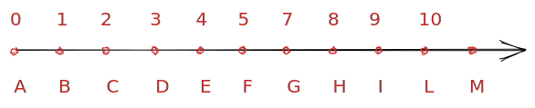

<!DOCTYPE html>
<html lang="it">

<head>

  <meta charset="utf-8">
  <meta name="viewport" content="width=device-width, initial-scale=1">
  <meta http-equiv="X-UA-Compatible" content="IE=edge">
  <meta name="generator" content="Source Themes Academia 4.3.1">
  <meta name="generator" content="Hugo 0.88.1" />

  

  
  
  
  
  
    
    
    
  
  

  <meta name="author" content="Diego Fantinelli">

  
  
  
    
  
  <meta name="description" content="☆ scadenza: 30 settembre 2021
 L’insieme dei numeri naturali  Numeri, continuamente numeri: il numero dei giri, il numero della macchina, il distacco, il tempo trascorso, il tempo che manca, il numero sulla maglia, il punteggio&hellip;
 Servono veramente tutti questi numeri? Sono essenziali o se ne potrebbe fare a meno?   1. numeri naturali e loro ordinamento  come si rappresentano gli insiemi numerici?  $$ \mathbb{N} = \{ 0; 1; 2; 3; \dots \} $$">

  
  <link rel="alternate" hreflang="it" href="https://jazzmagus.github.io/math2021/courses/math-01/capitolo1/">

  


  

  
  
  
  <meta name="theme-color" content="#EF525B">
  

  
  
  
  
    
    <link rel="stylesheet" href="https://cdnjs.cloudflare.com/ajax/libs/academicons/1.8.6/css/academicons.min.css" integrity="sha256-uFVgMKfistnJAfoCUQigIl+JfUaP47GrRKjf6CTPVmw=" crossorigin="anonymous">
    <link rel="stylesheet" href="https://use.fontawesome.com/releases/v5.6.0/css/all.css" integrity="sha384-aOkxzJ5uQz7WBObEZcHvV5JvRW3TUc2rNPA7pe3AwnsUohiw1Vj2Rgx2KSOkF5+h" crossorigin="anonymous">
    <link rel="stylesheet" href="https://cdnjs.cloudflare.com/ajax/libs/fancybox/3.2.5/jquery.fancybox.min.css" integrity="sha256-ygkqlh3CYSUri3LhQxzdcm0n1EQvH2Y+U5S2idbLtxs=" crossorigin="anonymous">

    
    
    
      
    
    
      
      
        
          <link rel="stylesheet" href="https://cdnjs.cloudflare.com/ajax/libs/highlight.js/9.15.6/styles/github.min.css" crossorigin="anonymous" title="hl-light">
          <link rel="stylesheet" href="https://cdnjs.cloudflare.com/ajax/libs/highlight.js/9.15.6/styles/dracula.min.css" crossorigin="anonymous" title="hl-dark" disabled>
        
      
    

    
    <link rel="stylesheet" href="https://cdnjs.cloudflare.com/ajax/libs/leaflet/1.2.0/leaflet.css" integrity="sha512-M2wvCLH6DSRazYeZRIm1JnYyh22purTM+FDB5CsyxtQJYeKq83arPe5wgbNmcFXGqiSH2XR8dT/fJISVA1r/zQ==" crossorigin="anonymous">
    

    

  

  
  
  <link rel="stylesheet" href="https://fonts.googleapis.com/css?family=Cutive+Mono|Lora:400,700|Roboto:400,700&display=swap">
  

  
  
  
  <link rel="stylesheet" href="/math2021/css/academia.min.c60bf4542cb23979bae5b6522900f370.css">

  

  
  
  
  

  

  <link rel="manifest" href="/math2021/site.webmanifest">
  <link rel="icon" type="image/png" href="/math2021/img/icon.png">
  <link rel="apple-touch-icon" type="image/png" href="/math2021/img/icon-192.png">

  <link rel="canonical" href="https://jazzmagus.github.io/math2021/courses/math-01/capitolo1/">

  
  
  
  
    
    
  
  <meta property="twitter:card" content="summary">
  
  <meta property="twitter:site" content="@tweetmagus">
  <meta property="twitter:creator" content="@tweetmagus">
  
  <meta property="og:site_name" content="The Math of Things">
  <meta property="og:url" content="https://jazzmagus.github.io/math2021/courses/math-01/capitolo1/">
  <meta property="og:title" content="Numeri naturali e numeri interi relativi | The Math of Things">
  <meta property="og:description" content="☆ scadenza: 30 settembre 2021
 L’insieme dei numeri naturali  Numeri, continuamente numeri: il numero dei giri, il numero della macchina, il distacco, il tempo trascorso, il tempo che manca, il numero sulla maglia, il punteggio&hellip;
 Servono veramente tutti questi numeri? Sono essenziali o se ne potrebbe fare a meno?   1. numeri naturali e loro ordinamento  come si rappresentano gli insiemi numerici?  $$ \mathbb{N} = \{ 0; 1; 2; 3; \dots \} $$"><meta property="og:image" content="https://jazzmagus.github.io/math2021/img/icon-192.png">
  <meta property="twitter:image" content="https://jazzmagus.github.io/math2021/img/icon-192.png"><meta property="og:locale" content="it">
  
  <meta property="article:published_time" content="2021-09-09T00:00:00&#43;01:00">
  
  <meta property="article:modified_time" content="2021-09-09T00:00:00&#43;01:00">
  

  


  


  <title>Numeri naturali e numeri interi relativi | The Math of Things</title>

</head>


<body id="top" data-spy="scroll" data-target="#TableOfContents" data-offset="71" >

  <aside class="search-results" id="search">
  <div class="container">
    <section class="search-header">

      <div class="row no-gutters justify-content-between mb-3">
        <div class="col-6">
          <h1>Search</h1>
        </div>
        <div class="col-6 col-search-close">
          <a class="js-search" href="#"><i class="fas fa-times-circle text-muted" aria-hidden="true"></i></a>
        </div>
      </div>

      <div id="search-box">
        
        
        
      </div>

    </section>
    <section class="section-search-results">

      <div id="search-hits">
        
      </div>

    </section>
  </div>
</aside>


  
<nav class="navbar navbar-light fixed-top navbar-expand-lg py-0" id="navbar-main">
  <div class="container">

    
      <a class="navbar-brand" href="/math2021/">The Math of Things</a>
      
      <button type="button" class="navbar-toggler" data-toggle="collapse" data-target="#navbar" aria-controls="navbar" aria-expanded="false" aria-label="Toggle navigation"><span><i class="fas fa-bars"></i></span>
      </button>
      

    
    <div class="collapse navbar-collapse" id="navbar">
      
      
      <ul class="navbar-nav ml-auto">
        

        

        
        
        
          
        

        
        
        
        
        
        
          
          
          
            
          
          
        

        <li class="nav-item">
          <a class="nav-link " href="/math2021/#about"><span>Home</span></a>
        </li>

        
        

        

        
        
        
          
        

        
        
        
        
        
        
          
          
          
            
          
          
        

        <li class="nav-item">
          <a class="nav-link " href="/math2021/#posts"><span>Posts</span></a>
        </li>

        
        

        

        
        
        
          
        

        
        
        
        
        
        
          
          
          
            
          
          
        

        <li class="nav-item">
          <a class="nav-link " href="/math2021/#projects"><span>Projects</span></a>
        </li>

        
        

        

        
        
        
          
        

        
        
        
        
        
        
          
          
          
            
          
          
        

        <li class="nav-item">
          <a class="nav-link " href="/math2021/#publications"><span>Publications</span></a>
        </li>

        
        

        

        
        
        
          
        

        
        
        
        
        
        

        <li class="nav-item">
          <a class="nav-link  active" href="/math2021/courses/"><span>Courses</span></a>
        </li>

        
        

        

        
        
        
          
        

        
        
        
        
        
        
          
          
          
            
          
          
        

        <li class="nav-item">
          <a class="nav-link " href="/math2021/#contact"><span>Contact</span></a>
        </li>

        
        

      

        

        

        

        
        <li class="nav-item">
          <a class="nav-link js-dark-toggle" href="#"><i class="fas fa-moon" aria-hidden="true"></i></a>
        </li>
        

      </ul>
    </div>
  </div>
</nav>


  

<div class="container-fluid docs">
  <div class="row flex-xl-nowrap">
    <div class="col-12 col-md-3 col-xl-2 docs-sidebar">
      


<form class="docs-search d-flex align-items-center">
  <button class="btn docs-toggle d-md-none p-0 mr-3" type="button" data-toggle="collapse" data-target="#docs-nav" aria-controls="docs-nav" aria-expanded="false" aria-label="Toggle section navigation">
    <span><i class="fas fa-bars"></i></span>
  </button>

  
</form>

<nav class="collapse docs-links" id="docs-nav">
  
  
  <div class="docs-toc-item">
    <a class="docs-toc-link" href="/math2021/courses/math-01/">Matematica per le Classi Prime</a>

  </div>
  
  <div class="docs-toc-item active">
    <a class="docs-toc-link" href="/math2021/courses/math-01/capitolo1/">Capitolo 1 numeri Naturali e Interi Relativi</a>

  </div>
  
  <div class="docs-toc-item">
    <a class="docs-toc-link" href="/math2021/courses/math-01/capitolo2/">Capitolo 2 numeri Razionali e numeri Reali</a>

  </div>
  
  <div class="docs-toc-item">
    <a class="docs-toc-link" href="/math2021/courses/math-01/capitolo3/">Capitolo 3 Insiemi e Logica</a>

  </div>
  
  <div class="docs-toc-item">
    <a class="docs-toc-link" href="/math2021/courses/math-01/capitolo4/">Capitolo 4 Relazioni e Funzioni</a>

  </div>
  
  <div class="docs-toc-item">
    <a class="docs-toc-link" href="/math2021/courses/math-01/capitolo5/">Capitolo 5 monomi e polinomi</a>

  </div>
  
  <div class="docs-toc-item">
    <a class="docs-toc-link" href="/math2021/courses/math-01/capitolo6/">Capitolo 6 | Fattorizzazione polinomiale</a>

  </div>
  
  <div class="docs-toc-item">
    <a class="docs-toc-link" href="/math2021/courses/math-01/capitolo7/">Capitolo 7 | Frazioni algebriche</a>

  </div>
  
  
</nav>

    </div>

    

    <main class="col-12 col-md-9 col-xl-8 py-md-3 pl-md-5 docs-content" role="main">

      <article class="article" itemscope itemtype="http://schema.org/Article">

        <div class="docs-article-container">
          <h1 itemprop="name">Numeri naturali e numeri interi relativi</h1>

          <div class="article-style" itemprop="articleBody">
            <blockquote>
<p>☆ <strong>scadenza</strong>: 30 settembre 2021</p>
</blockquote>
<p></p>
<h2 id="linsieme-dei-numeri-naturali">L’insieme dei numeri naturali</h2>
<!-- raw HTML omitted -->
<blockquote>
<p>Numeri, continuamente numeri: il numero dei giri, il numero della macchina, il distacco, il tempo trascorso, il tempo che manca, il numero sulla maglia, il punteggio&hellip;</p>
<ul>
<li>Servono veramente tutti questi numeri?</li>
<li>Sono essenziali o se ne potrebbe fare a meno?</li>
</ul>
</blockquote>
<h3 id="1-numeri-naturali-e-loro-ordinamento">1. numeri naturali e loro ordinamento</h3>
<ul>
<li>come si rappresentano gli insiemi numerici?</li>
</ul>
<p>$$ \mathbb{N} = \{ 0; 1; 2; 3; \dots \} $$</p>
<blockquote>
<p><strong>osservazione</strong>: l&rsquo;inserimento dello <code>zero</code> nell&rsquo;insieme $\mathbb{N}$ è ancor oggi una questione controversa, tanto che, a volte, si rende necessario distinguere i due <em>diversi</em> insiemi $\mathbb{N}$ in:</p>
</blockquote>
<ul>
<li>
<p>$\mathbb{N}$: insieme dei numeri naturali, compreso lo <code>zero</code> (regalatoci dagli indiani&hellip;)</p>
</li>
<li>
<p>$\mathbb{N^*}$: insieme dei numeri naturali, escluso lo <code>zero</code></p>
</li>
</ul>
<p>Nascono comunque dall&rsquo;attività dell&rsquo;uomo del <code>contare</code>, per questo vengono detti <strong>naturali</strong>.</p>
<h2 id="proprietà-dellinsieme-n">proprietà dell’insieme $N$</h2>
<ul>
<li>L’insieme dei numeri naturali è <code>infinito</code>.</li>
<li>Ogni numero naturale ha un <code>successivo</code>.</li>
<li>Ogni numero naturale, eccetto lo zero, ha un <code>precedente</code>.</li>
<li>Lo <code>zero</code> è l’elemento <code>minimo</code> dell’insieme dei numeri naturali.</li>
<li>L’insieme dei numeri naturali <code>non</code> ha un elemento <code>massimo</code></li>
</ul>
<p>Per indicare che due numeri $a$ e $b$ sono uguali, useremo il simbolo $=$ e scriveremo: $$a=b$$ leggendo «<em>$a$ è uguale a $b$</em>»;</p>
<ul>
<li>la precedente <strong>relazione</strong> è <code>bidirezionale</code>, cioè deve intendersi nelle due direzioni, <em>sempre</em>.</li>
</ul>
<p>Il termine a <strong>sinistra</strong> dell&rsquo;uguale viene chiamato <strong>primo membro</strong>, mentre quello a <strong>destra</strong> si indica con <strong>secondo membro</strong>.</p>
<blockquote>
<p>ad esempio: $$17=17$$</p>
</blockquote>
<p>La relazione di <strong>uguaglianza</strong> tra due numeri naturali gode delle seguenti proprietà:</p>
<ul>
<li>
<p><strong>riflessiva</strong>: ogni numero è uguale a se stesso: $a=a$;</p>
</li>
<li>
<p><strong>simmetrica</strong>: se $a=b$ allora $b=a$;</p>
</li>
<li>
<p><strong>transitiva</strong>: se $a=b$ e $b=c$ allora $a=c$.</p>
</li>
<li>
<p>I numeri naturali hanno un <code>ordine</code>, cioè, dati due numeri naturali, diversi tra loro, è sempre possibile confrontarli stabilendo tra essi una relazione di <strong>disuguaglianza</strong>:</p>
<ul>
<li>se nella successione dei numeri naturali un numero $a$ precede un numero $b$, si dice che $a$ è <strong>minore</strong> di $b$ e si scrive: $$a&lt;b$$</li>
<li>se invece $a$ segue $b$, si dice che $a$ è <strong>maggiore</strong> di $b$ e si scrive: $$a&gt;b$$</li>
</ul>
</li>
<li>
<p>per indicare le relazioni d&rsquo;ordine vengono utilizzati anche i simboli di <strong>disuguaglianza</strong>:</p>
<ul>
<li><strong>maggiore o uguale</strong>: si indica con il simbolo &ldquo;$\geq$&quot;: $$a \geq b$$
<ul>
<li><strong>minire o uguale</strong>: si indica con il simbolo &ldquo;$\leq$&quot;: $$a \leq b$$</li>
</ul>
</li>
</ul>
<blockquote>
<p>es.: proprietà transitiva della <strong>disuguaglianza</strong>:</p>
<ul>
<li>se $a \leq b$ e $b \leq c$, allora $a \leq c$</li>
</ul>
</blockquote>
</li>
<li>
<p>I numeri naturali possono essere facilmente <strong>rappresentati</strong> graficamente attraverso una <strong>semiretta orientata</strong></p>
</li>
</ul>
<p></p>
<h2 id="le-quattro-operazioni-aritmetiche-con-i-numeri-naturali">Le quattro operazioni aritmetiche con i numeri naturali</h2>
<h3 id="2-addizione-e-sue-proprietà">2. addizione e sue proprietà</h3>
<blockquote>
<p><strong>definizione</strong>: la <strong>somma</strong> di due numeri naturali è quel numero naturale che si ottiene contando di seguito al primo tutte le unità del secondo.</p>
</blockquote>
<ol>
<li>proprietà <strong>commutativa</strong>:
<ul>
<li>cambiando l'<strong>ordine</strong> degli addendi il risultato non cambia: $$a+b=b+a$$</li>
</ul>
</li>
<li>proprietà <strong>associativa</strong>:
<ul>
<li>la somma di tre numeri non cambia se a due addendi consecutivi si sostituisce la loro somma: $$(a+b)+c=a+(b+c)$$</li>
</ul>
</li>
<li>Esiste l'<strong>elemento neutro</strong> dell’addizione:
<ul>
<li>è il <code>numero zero</code>. Ciò significa che sommando <em>zero</em> a qualsiasi numero si ottiene il numero dato</li>
</ul>
</li>
</ol>
<hr>
<h3 id="3-sottrazione-e-sue-proprietà">3. sottrazione e sue proprietà</h3>
<ul>
<li>è un’operazione che si esegue tra due numeri, considerati nell’ordine, il primo detto <code>minuendo</code> e il secondo <code>sottraendo</code>. Il risultato della sottrazione si chiama <code>differenza</code>.</li>
</ul>
<blockquote>
<p><strong>definizione</strong>: la <strong>differenza</strong> tra due numeri naturali è quel numero naturale, se esiste, che addizionato al <code>sottraendo</code> dà come somma il <code>minuendo</code>.</p>
<ul>
<li>esempio: $5-2=3$ perché $5=3+2$</li>
</ul>
</blockquote>
<ul>
<li>
<p>casi particolari:</p>
</li>
<li>
<p>La sottrazione $4-6$ non si può eseguire in $\mathbb{N}$ perché non esiste alcun numero naturale che, sommato a $6$, dia $4$.</p>
</li>
<li>
<p>La sottrazione, nell’insieme dei numeri naturali, si può eseguire solo se il minuendo è <strong>maggiore</strong> o <strong>uguale</strong> al sottraendo: $$a-b=c \rightarrow a= b+c$$ con $$a\geq c$$</p>
</li>
<li>
<p>La sottrazione gode della proprietà <code>invariantiva</code>: se si somma o si sottrae uno stesso numero sia al minuendo sia al sottraendo, la differenza non cambia: $$(a-b)=(a+c)-(b+c)$$</p>
<ul>
<li>Grazie alla proprietà invariantiva possiamo eseguire rapidamente alcune sottrazioni: $$(198-48)=(198+2)-(48+2)=200-50=150$$</li>
</ul>
</li>
<li>
<p>La sottrazione <strong>non</strong> gode della proprietà <strong>commutativa</strong>: $7- 5 =2$, ma $5-7$ non è calcolabile in $\mathbb{N}$ e non ammette elemento neutro: $2- 0 =2$, ma $0-2$ non si può eseguire in $\mathbb{N}$.</p>
</li>
<li>
<p>La sottrazione <strong>non</strong> gode neppure della proprietà <strong>associativa</strong>.</p>
<ul>
<li>Ad esempio per calcolare $15-4-2$ è necessario eseguire le sottrazioni <code>nell’ordine</code> indicato: $$\underbrace{(15-4)}_{11}-2=9$$</li>
</ul>
</li>
</ul>
<hr>
<h3 id="4-moltiplicazione-e-sue-proprietà">4. moltiplicazione e sue proprietà</h3>
<blockquote>
<p><strong>definizione</strong>: <strong>prodotto</strong> di due numeri naturali</p>
<ul>
<li>è la somma di tanti addendi uguali al primo fattore quante sono le unità indicate dal secondo: $$a \cdot b= \underbrace{a+a+a+ \ldots + a}_{b \; \text{addendi}}$$</li>
</ul>
</blockquote>
<ol>
<li>proprietà <strong>commutativa</strong>: il prodotto tra due o più fattori non cambia se cambia il loro <code>ordine</code>: $$a \cdot b = b \cdot a$$</li>
<li>proprietà <strong>associativa</strong>: il prodotto di tre numeri non cambia se a due fattori consecutivi si sostituisce il loro prodotto: $$(a \cdot b)\cdot c= a \cdot (b \cdot c)$$</li>
<li>proprietà <strong>distributiva</strong>:
<ul>
<li>della moltiplicazione rispetto alla addizione: $$a \cdot (b+c)= a \cdot b + a \cdot c$$</li>
<li>della moltiplicazione rispetto alla sottrazione: $$a \cdot (b-c)= a \cdot b - a \cdot c$$</li>
</ul>
</li>
<li>raccoglimento a <code>fattor comune</code>: si ottiene leggendo nell&rsquo;altro verso la proprietà distributiva: se in una somma <strong>tutti</strong> gli addendi hanno un <code>fattore</code> in comune, esso può essere <code>raccolto</code> e <code>moltiplicato</code> per la somma degli altri termini; allo stesso modo per la differenza:
$$\underbrace{3 \cdot 7 + 3 \cdot 5}_{21+15=36} = \underbrace{3 \cdot (7+5)}_{3 \cdot 12 = 36} \qquad \underbrace{8 \cdot 12-8 \cdot 9}_{96-72=24}=\underbrace{8 \cdot(12-9)}_{8 \cdot 3=24}$$</li>
<li>esistenza dell&rsquo;elemento <code>neutro</code>: moltiplicando qualsiasi numero per <code>uno</code> si ottiene il numero dato</li>
<li>esistenza dell'<code>elemento annullatore</code>: moltiplicando qualsiasi numero per <code>zero</code> si ottiene <code>zero</code></li>
<li><strong>Legge di annullamento del prodotto</strong>: se il prodotto tra due o più fattori è <code>zero</code> allora almeno uno dei fattori è <code>zero</code></li>
</ol>
<hr>
<h3 id="5-divisione-e-sue-proprietà">5. divisione e sue proprietà</h3>
<blockquote>
<p>Il <code>quoziente</code> tra due numeri naturali, dei quali il secondo diverso da <code>zero</code>, è quel numero naturale, se esiste, che moltiplicato per il <code>divisore</code> dà il <code>dividendo</code>:</p>
<ul>
<li>$a : b=c$, con $b \neq 0$, $\underbrace{\Longrightarrow}_{\text{implica}} a=b \cdot c$</li>
</ul>
<p>se la divisione si può eseguire in $\mathbb{N}$, allora si dice che $a$ è <strong>divisibile</strong> per $b$ o anche che $b$ è <strong>multiplo</strong> di $a$.</p>
<ul>
<li>Ad esempio $24$ è divisibile per $6$  e $24$ è multiplo di $6$</li>
<li>La divisione $19:5$ non può essere eseguita in $\mathbb{N}$, poiché non esiste alcun numero naturale che, moltiplicato per $5$, dia $19$.</li>
</ul>
<p><strong>ATTENZIONE</strong>:</p>
<ul>
<li>Non è invece possibile eseguire la divisione di un numero naturale e lo <code>zero</code>, poiché il risultato dovrebbe essere un numero che, moltiplicato per <code>zero</code> dia il numero iniziale, ma qualsiasi numero moltiplicato per <code>zero</code> restituisce <code>zero</code>, che rappresenta infatti l&rsquo;elemento <strong>annullatore</strong> della moltiplicazione.</li>
<li>La divisione $0:0$ invece ha infiniti risultati, poiché esistono infiniti numeri che moltiplicati per<code>zero</code> danno come risultato <code>zero</code>.</li>
<li>La divisione per <code>zero</code> quindi <strong>non è mai definita</strong></li>
</ul>
</blockquote>
<ul>
<li><strong>casi particolari</strong>:</li>
</ul>
<table>
<thead>
<tr>
<th>in generale</th>
<th>esempio</th>
<th>osservazioni</th>
</tr>
</thead>
<tbody>
<tr>
<td>$a:1=a$</td>
<td>$6:1=6$</td>
<td>$1$ può essere considerato l'<em>elemento neutro</em> della divisione</td>
</tr>
<tr>
<td>$a:a=1$, con $a \neq 0$</td>
<td>$6:6=1$</td>
<td>se <em>dividendo</em> e <em>divisore</em>, entrambi $\in \mathbb{N}$ sono uguali, il risultato della divisione è l'<strong>unità</strong></td>
</tr>
<tr>
<td>$0:a=0$, se $a \neq 0$</td>
<td>$0:6=0$</td>
<td>lo $0$ al <strong>dividendo</strong> può essere considerato l'<em>elemento annullatore</em> della divisione</td>
</tr>
</tbody>
</table>
<p><code>Q: Qual è la differenza tra divisione e quoziente?</code></p>
<h3 id="proprietà-invariantiva-della-divisione">proprietà invariantiva della divisione</h3>
<ul>
<li>
<p>se si moltiplicano o si dividono sia il dividendo sia il divisore per uno stesso numero - diverso da zero -, il quoziente non cambia:</p>
<ul>
<li>
<p>$a:b=(a \cdot c):(b \cdot c)$</p>
</li>
<li>
<p><strong>esempio</strong>:
$$65:5=(65 \cdot 2):(5 \cdot 2)=130:10=13$$</p>
</li>
<li>
<p>$a:b=(a : c):(b : c)$</p>
</li>
<li>
<p><strong>esempio</strong>:
$$72:12=(72 : 2):(12 : 2)=36:6=6$$</p>
</li>
</ul>
</li>
</ul>
<hr>
<h3 id="proprietà-distributiva-della-divisione">proprietà distributiva della divisione</h3>
<ul>
<li>
<p>rispetto alla <strong>addizione</strong>:</p>
<ul>
<li>per dividere una <code>somma</code> per un <code>numero</code> si può dividere ciascun addendo per quel numero e quindi sommare i quozienti:</li>
<li>$$(a+b):c=a:b+a:c$$</li>
<li>$$\underbrace{(32+24)}_{56}:8=32:8+24:8=4+3=7$$</li>
</ul>
</li>
<li>
<p>rispetto alla <strong>sottrazione</strong>:</p>
<ul>
<li>per <code>dividere</code> una <code>differenza</code> per un <code>numero</code> si possono dividere sia il <code>minuendo</code> sia il <code>sottraendo</code> per quel numero e quindi eseguire la <code>sottrazione</code> tra i <code>quozienti</code>:</li>
<li>$$(a-b):c=a:b-a:c$$</li>
<li>$$\underbrace{(32-24)}_{8}:8=32:8-24:8=4-3=1$$</li>
</ul>
</li>
</ul>
<blockquote>
<p>La proprietà distributiva della divisione può essere applicata per eseguire più rapidamente alcune divisioni:
$$612:6=(600+12):6=600:6+12:6=100+2=102$$</p>
</blockquote>
<ul>
<li><strong>Non</strong> esistono proprietà distributive per dividere un numero per una somma o per una differenza.
$$a:(b+c) \neq a:b+a:c$$</li>
</ul>
<hr>
<h3 id="divisione-approssimata---con-resto">divisione approssimata - con resto</h3>
<ul>
<li>
<p>Se il dividendo <strong>non</strong> è multiplo del divisore, la divisione esatta non si può eseguire. Si può ricorrere allora alla divisione approssimata che associa al dividendo e al divisore due numeri naturali, detti rispettivamente <code>quoziente</code> e <code>resto</code>.</p>
</li>
<li>
<p>Il <strong>quoziente</strong> della divisione approssimata è il più grande numero naturale che, moltiplicato per il divisore, dà un prodotto minore o uguale al dividendo.</p>
</li>
<li>
<p>Il <strong>resto</strong> è la <strong>differenza</strong> tra il dividendo e tale prodotto.</p>
</li>
<li>
<p>Il resto risulta <strong>sempre minore</strong> del divisore</p>
</li>
</ul>
<blockquote>
<p>se $r=0$, allora l&rsquo;uguaglianza $a=b \cdot q +r$ diviene:
$$a=b \cdot q$$
che è la definizione di divisione che risulterà pertanto <code>esatta</code></p>
</blockquote>
<p>$$a:b=q \; \text{con resto }r \; \longleftrightarrow \quad a=b \cdot q +r \quad(r &lt;b)$$</p>
<h3 id="proprietà-invariantiva-della-divisione-approssimata">Proprietà invariantiva della divisione approssimata</h3>
<blockquote>
<p>se si moltiplicano o si dividono <code>sia</code> il dividendo <code>sia</code> il divisore per uno stesso numero diverso da zero il quoziente non cambia, mentre il resto risulta moltiplicato o diviso per il numero dato:</p>
</blockquote>
<p>$$a:b=q \; \text{con resto }r \; \longrightarrow \; (a \cdot c) : (b \cdot c)= q \; \text{con resto }(r \cdot c)$$</p>
<p>$$a:b=q \; \text{con resto }r \; \longrightarrow \; (a : c) : (b : c)= q \; \text{con resto }(r : c)$$</p>
<hr>
<h2 id="potenze-in-mathbbn-e-proprietà-delle-potenze">POTENZE in $\mathbb{N}$ e PROPRIETÀ delle POTENZE</h2>
<h3 id="6-definizione-di-potenza">6. definizione di potenza</h3>
<blockquote>
<p><strong>DEFINIZIONE</strong>:
La potenza di <code>base</code> $a$ ed <code>esponente</code> $n$ si indica con $a^n$ ed è uguale al prodotto di $n$ <code>fattori</code> uguali ad $a$:</p>
<p>$$a^n = \underbrace{a \cdot a \cdot a \cdot \ldots \cdot a}_{n \; \text{volte}}$$</p>
</blockquote>
<p>Come accade spesso in matematica per le potenze si adottano delle convenzioni:</p>
<ul>
<li>$a^1=a$</li>
<li>$a^0=1$, per $a \neq 0$</li>
<li>$0^0$ <strong>non ha significato</strong></li>
</ul>
<p><strong>casi particolari</strong>:</p>
<ul>
<li>$1^n=1$, per ogni $n$ ($\forall n$)</li>
<li>$0^n=0 \quad \forall n \neq 0$</li>
</ul>
<hr>
<h3 id="7-proprietà-delle-potenze">7. proprietà delle potenze</h3>
<blockquote>
<p><em>approfondimento</em>: <a href="/math2021/post/memoria-umana-gigabytes/">La memoria umana in gigabytes</a></p>
</blockquote>
<ul>
<li>Il <strong>prodotto</strong> di potenze con la stessa base è una potenza che ha per base la stessa base e per esponente la somma degli esponenti:
<ul>
<li>$a^m \cdot a^n = a^{m+n}$</li>
</ul>
</li>
<li>Il <strong>quoziente</strong> di due potenze con la stessa base è una potenza che ha per base la stessa base e per esponente la differenza degli esponenti:
<ul>
<li>$a^m : a^n = a^{m-n}$, con $(a \neq 0, \; m \geq n)$</li>
</ul>
</li>
<li>La <strong>potenza di una potenza</strong> è una potenza che ha per base la stessa base e per esponente il prodotto degli esponenti:
<ul>
<li>$a^m \cdot a^n = a^{m+n}$</li>
</ul>
</li>
</ul>
<blockquote>
<p><strong>ATTENZIONE</strong>:</p>
<ul>
<li>
<p>$(a+b)^n \neq a^n + b^n$</p>
</li>
<li>
<p>$(3+4)^2=49$, mentre $3^2 + 4^2 = 25$</p>
</li>
<li>
<p>Rif.: MULTIMATH VERDE Vol.1 pag. 43</p>
</li>
</ul>
</blockquote>
<hr>
<h2 id="espressioni-con-i-numeri-naturali">ESPRESSIONI CON I NUMERI NATURALI</h2>
<blockquote>
<p>Le espressioni numeriche sono una <strong>sequenza</strong> di operazioni, da eseguirsi rispettando il loro <strong>grado di priorità</strong>.</p>
<ol>
<li>elevamenti a potenza</li>
<li>moltiplicazioni e divisioni</li>
<li>addizioni e sottrazioni</li>
</ol>
</blockquote>
<h3 id="8-priorità-delle-operazioni">8. Priorità delle operazioni</h3>
<p><strong>ESEMPIO</strong>:</p>
<p>$$
12 - 4 \cdot 2 + 9 : 3 = 12 - 8 + 3 = 4 + 3 = 7
$$</p>
<h3 id="9-le-parentesi">9. Le parentesi</h3>
<blockquote>
<p>Per indicare che le operazioni si devono eseguire in un ordine diverso da quello dato dal loro <strong>grado di priorità</strong>, si utilizzano le parentesi.</p>
</blockquote>
<ol>
<li>Le parentesi, in un’espressione, devono sempre comparire in <strong>coppie</strong>: a ogni parentesi <strong>aperta</strong> deve corrispondere una parentesi <strong>chiusa</strong>.</li>
<li>Si devono eseguire per prime le operazioni indicate nelle coppie di parentesi più <strong>interne</strong>, ossia in quelle coppie, formate da una parentesi aperta e una chiusa, all’interno delle quali non vi siano altre parentesi.</li>
<li>Tali coppiedi parentesi devono quindi essere <strong>sostituite</strong> con i risultati rispettivamente ottenuti.</li>
<li>Si prosegue in questo modo fino a quando non vi sono più parentesi.</li>
<li>Nel caso siano indicate di seguito diverse operazioni con lo stesso grado di priorità, esse vanno eseguite nell’ordine dato.</li>
</ol>
<p>$$168 : 12 \cdot 3 : 2$$</p>
<ul>
<li>consideriamo la stessa espressione numerica dell&rsquo;esempio precedente e riscriviamola utilizzando le parentesi</li>
<li><code>osservazione</code>: in questo caso risulta evidente che le parentesi sono <em>ridondanti</em>, ossia &ldquo;<em>di troppo</em>&rdquo;.</li>
</ul>
<p>$$
\left[12 - (4 \cdot 2) + (9 : 3) \right] = 12 - 8 + 3 = 4 + 3 = 7
$$</p>
<hr>
<h3 id="10-altre-proprietà-delle-operazioni">10. altre proprietà delle operazioni</h3>
<ul>
<li>
<p>Per dividere un <strong>prodotto</strong> per un <strong>numero</strong>, si può dividere uno solo dei fattori per quel numero:</p>
<ul>
<li>$$(a \cdot b \cdot c): d = a \cdot (b:d) \cdot c$$</li>
<li>$$(7 \cdot 15 \cdot 6):5 = 7 \cdot (15:5) \cdot 6 = 7 \cdot 3 \cdot 6 = 126$$</li>
<li>In particolare, per dividere un prodotto per uno dei suoi fattori, è sufficiente sopprimere quel fattore:</li>
<li>$$(a \cdot b \cdot c): b = a \cdot c$$</li>
<li>$$ (7 \cdot 15 \cdot 6): 15 = 7 \cdot 6 = 42$$</li>
</ul>
</li>
<li>
<p>Per dividere un <strong>numero</strong> per un <strong>prodotto</strong>, si può dividere successivamente quel numero per ciascun fattore:</p>
<ul>
<li>$$a:(b \cdot c) = (a : b):c$$</li>
<li>$$48 : (2 \cdot 3) = (48 : 2) : 3 = 24 : 3 = 8$$</li>
</ul>
</li>
<li>
<p>Per moltiplicare un <strong>numero</strong> per un <strong>quoziente</strong>, si può moltiplicare il numero per il dividendo e poi dividere il prodotto ottenuto per il divisore, oppure dividere il numero per il divisore e successivamente moltiplicare il risultato per il dividendo:</p>
</li>
</ul>
<p>$$
a \cdot (b:c)=
\begin{cases}
(a \cdot b):c \\<br>
(a : c) \cdot b
\end{cases}
$$</p>
<p>$$
6 \cdot (12:3)=
\begin{cases}
(6 \cdot 12):3 \\<br>
(6 : 3) \cdot 12
\end{cases}
$$</p>
<hr>
<blockquote>
<p><strong>ESERCIZI</strong>: <em>Rif.: MULTIMATH VERDE Vol.1 pag. 43, n. 67</em></p>
</blockquote>
<hr>
<h2 id="divisibilità-e-numeri-primi">Divisibilità e &ldquo;numeri primi&rdquo;</h2>
<h3 id="11-multipli-e-divisori">11. multipli e divisori</h3>
<h3 id="12-criteri-di-divisibilità">12. criteri di divisibilità</h3>
<ul>
<li><strong>Divisibilità per 2</strong>. Un numero è divisibile per 2 se la sua ultima cifra è <strong>pari</strong>.</li>
<li><strong>Divisibilità per 3</strong>. Un numero è divisibile per 3 se la <strong>somma delle sue cifre è divisibile per 3</strong></li>
<li><strong>Divisibilità per 4</strong>. Un numero è divisibile per 4 se il numero formato dalle sue ultime due cifre è divisibile per 4 oppure se le sue ultime due cifre sono due zeri.</li>
<li><strong>Divisibilità per 5</strong>. Un numero è divisibile per 5 se la sua ultima cifra è 0 o 5.</li>
<li><strong>Divisibilità per 9</strong>. Un numero è divisibile per 9 se la somma delle sue cifre è divisibile per 9.</li>
<li><strong>Divisibilità per 10</strong>. Un numero è divisibile per 10 se la sua ultima cifra è 0.</li>
<li><strong>Divisibilità per 11</strong>. Un numero è divisibile per 11 se lo è la differenza tra la somma delle sue cifre di posto dispari (contandole per esempio da destra asinistra), eventualmente aumentata di un multiplo di 11, e la somma delle cifre di posto pari.</li>
<li><strong>Divisibilità per 25</strong>. Un numero è divisibile per 25 se le sue ultime due cifre sono 00 o 25 o 50 o 75.</li>
</ul>
<h3 id="13-scomposizione-in-fattori-primi">13. scomposizione in fattori primi</h3>
<blockquote>
<p><strong>definizione</strong>: un numero naturale si dice primo se è <strong>divisibile</strong> solo per se stesso e per $1$</p>
<ul>
<li>Il numero $1$, per convenzione, <em>non</em> si considera un numero primo.</li>
</ul>
<p>Ogni numero naturale, diverso da 0, che non sia primo si può esprimere, in un solo modo, come prodotto di fattori primi.</p>
<ul>
<li>Scomporre in fattori primi un numero naturale significa determinare tali fattori.</li>
<li>Per scomporre un numero in fattori primi si cercano i suoi divisori utilizzando i criteri di divisibilità, partendo dal primo numero della successione dei numeri primi, cioè 2, e procedendo in ordine crescente.</li>
<li>Si esegue la divisione del numero dato per il più piccolo numero primo che risulta suo divisore.</li>
<li>Si divide il quoziente ottenuto per il suo divisore primo più piccolo e si continua, ripetendo il procedimento, finché il quoziente risulta uguale a 1.</li>
</ul>
</blockquote>
<hr>
<h2 id="massimo--comune--divisore--e--minimo--comune--multiplo">Massimo  comune  divisore  e  minimo  comune  multiplo</h2>
<h3 id="14-massimo-comun-divisore-mcd">14. massimo comun divisore MCD</h3>
<blockquote>
<p>DEFINIZIONE: <strong>MASSIMO COMUNE DIVISORE</strong></p>
<ul>
<li>Il massimo comune divisore (<strong>MCD</strong>) di due o più numeri naturali, diversi da zero, è il più grande dei loro divisori comuni.</li>
</ul>
</blockquote>
<p>Per determinare il MCD di due o più numeri naturali</p>
<ol>
<li>si scompongono in fattori primi i numeri dati;</li>
<li>si moltiplicano fra loro tutti i fattori primi comuni ai numeri dati, presi una sola volta, ciascuno con l’esponente minore con cui figura.</li>
</ol>
<blockquote>
<p><strong>NUMERI PRIMI TRA LORO</strong></p>
<ul>
<li>Due o più numeri naturali sono primi tra loro (o coprimi) se il loro massimo comune divisore è 1</li>
</ul>
</blockquote>
<h3 id="15-minimo-comune-multiplo-mcm">15. minimo comune multiplo <em>mcm</em></h3>
<blockquote>
<p>DEFINIZIONE: <strong>MINIMO COMUNE MULTIPLO</strong></p>
<p>Il minimo comune multiplo (mcm) di due o più numeri naturali, diversi dazero, è il più piccolo dei loro multipli comuni diversi da zero</p>
</blockquote>
<p>Per determinare il mcm di due o più numeri naturali</p>
<ol>
<li>si scompongono in fattori primi i numeri dati;</li>
<li>si moltiplicano fra loro tutti i fattori primi, <strong>comuni e non comuni</strong>, dei numeri dati, presi una sola volta, ciascuno con l’esponente maggiore con cui figura.</li>
</ol>
<hr>
<h2 id="sistemi--di--numerazione">Sistemi  di  numerazione</h2>
<h3 id="16-il-sistema-decimale">16. il sistema decimale</h3>
<h3 id="17-cambiamenti-di-base">17. cambiamenti di base</h3>
<h4 id="dalla-base-b-alla-base-10">dalla base $b$ alla base $10$</h4>
<h4 id="dalla-base-10-alla-base-b">dalla base $10$ alla base $b$</h4>
<blockquote>
<p>Il termine <code>algoritmo</code> deriva dal nome del matematico di cultura araba Mohammed ibn-Musa al-Khuwarizmi, che visse a Baghdad nel IX secolod.C.; egli ci tramandò non solo un importante libro di calcolo numerico, ma anche un libro di algebra sulle equazioni di primo e secondo grado che fu basilare per lo sviluppo dell’algebra stessa. La parola algoritmo indica un procedimento di calcolo. Esso consiste in una successione finita di operazioni elementari da eseguire una dopo l’altra in un ordine ben preciso e deve avere le seguenti caratteristiche:</p>
<ul>
<li>deve essere <code>finito</code> (cioè terminare dopo un numero finito di operazioni),</li>
<li><code>definito</code> (ossia essere conciso e non ambiguo),</li>
<li><code>completo</code> e deve raggiungere il risultato per il quale è stato progettato.</li>
</ul>
</blockquote>
<hr>
<h2 id="linsieme--dei--numeri--interi--relativi-mathbbz">L’insieme  dei  numeri  interi  relativi $\mathbb{Z}$</h2>
<h2 id="18-i-numeri-interi-relativi">18. I numeri interi relativi</h2>
<h4 id="valore-assoluto-e-numeri-opposti">valore assoluto e numeri opposti</h4>
<h5 id="definizioni">DEFINIZIONI:</h5>
<ul>
<li>
<p><strong>VALORE ASSOLUTO DI UN NUMERO INTERO RELATIVO</strong>: Il valore assoluto o modulo di un numero intero relativo, positivo o negativo, è il numero stesso privato del suo segno</p>
</li>
<li>
<p><strong>NUMERI OPPOSTI</strong>: Due numeri interi relativi con lo stesso valore assoluto e con segni diversi sono opposti</p>
</li>
</ul>
<hr>
<h3 id="19-rappresentazione-dei-numeri-interi-relativi-su-una-retta-orientata">19. Rappresentazione dei numeri interi relativi su una retta orientata</h3>
<h2 id="le-quattro-operazioni-aritmetiche-con-i-numeri-interi-relativi">Le quattro operazioni aritmetiche con i numeri interi relativi</h2>
<ul>
<li>
<h3 id="23-addizione">23. addizione</h3>
</li>
<li>
<h3 id="24-sottrazione">24. sottrazione</h3>
</li>
<li>
<h3 id="25-moltiplicazione">25. moltiplicazione</h3>
</li>
<li>
<h3 id="26-divisione">26. divisione</h3>
</li>
</ul>
<h2 id="potenza-di-un-numero-intero-relativo">Potenza di un numero intero relativo</h2>
<h3 id="le-potenze-nellinsieme-dei-numeri-interi-relativi">Le Potenze nell&rsquo;insieme dei numeri interi relativi</h3>

          </div>

          


          
          <div class="article-widget">
            
<div class="post-nav">
  
  
  
  <div class="post-nav-item">
    <div class="meta-nav">Next</div>
    <a href="/math2021/courses/math-01/capitolo2/" rel="prev">Numeri razionali e numeri reali</a>
  </div>
  
</div>

          </div>
          
        </div>

        <div class="body-footer">
          Last updated on Sep 9, 2021
        </div>

      </article>

      <footer class="site-footer">
  <div class="container">
    <div class="row align-items-center">
      <div class="col-md-6 mb-4 mb-md-0">
        
        <p class="mb-0">
          Copyright © JaZzMaGuS 2021 &middot; 
          Powered by
          <a href="https://github.com/jazzmagus" target="_blank" rel="noopener">JaZzMaGuS</a>
        </p>
      </div>
      <div class="col-md-6">
        <ul class="list-inline network-icon text-right mb-0">
          
          
          
          
          
          
          
          
          
          
          
          
          
          <li class="list-inline-item">
            <a href="https://twitter.com/jazzmagus" target="_blank" rel="noopener" title="DM Me"><i class="fab fa-twitter" aria-hidden="true"></i></a>
          </li>
          
          
          
          
          
          
          
          
          
          
          <li class="list-inline-item">
            <a href="skype:echo123?call"  title="jazzmagus"><i class="fab fa-skype" aria-hidden="true"></i></a>
          </li>
          
        </ul>
      </div>
    </div>
  </div>
</footer>

    </main>
  </div>
</div>


      

    
    
    
    <script src="/math2021/js/mathjax-config.js"></script>
    

    
    
    
      <script src="https://cdnjs.cloudflare.com/ajax/libs/jquery/3.4.1/jquery.min.js" integrity="sha256-CSXorXvZcTkaix6Yvo6HppcZGetbYMGWSFlBw8HfCJo=" crossorigin="anonymous"></script>
      <script src="https://cdnjs.cloudflare.com/ajax/libs/jquery.imagesloaded/4.1.4/imagesloaded.pkgd.min.js" integrity="sha256-lqvxZrPLtfffUl2G/e7szqSvPBILGbwmsGE1MKlOi0Q=" crossorigin="anonymous"></script>
      <script src="https://cdnjs.cloudflare.com/ajax/libs/jquery.isotope/3.0.6/isotope.pkgd.min.js" integrity="sha256-CBrpuqrMhXwcLLUd5tvQ4euBHCdh7wGlDfNz8vbu/iI=" crossorigin="anonymous"></script>
      <script src="https://cdnjs.cloudflare.com/ajax/libs/fancybox/3.2.5/jquery.fancybox.min.js" integrity="sha256-X5PoE3KU5l+JcX+w09p/wHl9AzK333C4hJ2I9S5mD4M=" crossorigin="anonymous"></script>

      
        <script src="https://cdnjs.cloudflare.com/ajax/libs/mermaid/8.0.0/mermaid.min.js" integrity="sha256-0w92bcB21IY5+rGI84MGj52jNfHNbXVeQLrZ0CGdjNY=" crossorigin="anonymous" title="mermaid"></script>
      

      
        
        <script src="https://cdnjs.cloudflare.com/ajax/libs/highlight.js/9.15.6/highlight.min.js" integrity="sha256-aYTdUrn6Ow1DDgh5JTc3aDGnnju48y/1c8s1dgkYPQ8=" crossorigin="anonymous"></script>
        
      

      
      
      <script src="https://cdnjs.cloudflare.com/ajax/libs/mathjax/2.7.4/MathJax.js?config=TeX-AMS_CHTML-full" integrity="sha256-GhM+5JHb6QUzOQPXSJLEWP7R73CbkisjzK5Eyij4U9w=" crossorigin="anonymous" async></script>
      
    

    
    
      <script src="https://cdnjs.cloudflare.com/ajax/libs/leaflet/1.2.0/leaflet.js" integrity="sha512-lInM/apFSqyy1o6s89K4iQUKg6ppXEgsVxT35HbzUupEVRh2Eu9Wdl4tHj7dZO0s1uvplcYGmt3498TtHq+log==" crossorigin="anonymous"></script>
    

    
    
    

    
    
    <script>hljs.initHighlightingOnLoad();</script>
    

    

    
    
    <script src="https://cdnjs.cloudflare.com/ajax/libs/anchor-js/4.1.1/anchor.min.js" integrity="sha256-pB/deHc9CGfFpJRjC43imB29Rse8tak+5eXqntO94ck=" crossorigin="anonymous"></script>
    <script>
      anchors.add();
    </script>
    

    

    
    

    
    

    
    
    
    
    
    
    
    
    
    
    
    
    <script src="/math2021/js/academia.min.e40e230d9b3dfeac86994156b6388764.js"></script>

    


  

  
<div id="modal" class="modal fade" role="dialog">
  <div class="modal-dialog">
    <div class="modal-content">
      <div class="modal-header">
        <h5 class="modal-title">Cite</h5>
        <button type="button" class="close" data-dismiss="modal" aria-label="Close">
          <span aria-hidden="true">&times;</span>
        </button>
      </div>
      <div class="modal-body">
        <pre><code class="tex hljs"></code></pre>
      </div>
      <div class="modal-footer">
        <a class="btn btn-outline-primary my-1 js-copy-cite" href="#" target="_blank">
          <i class="fas fa-copy"></i> Copy
        </a>
        <a class="btn btn-outline-primary my-1 js-download-cite" href="#" target="_blank">
          <i class="fas fa-download"></i> Download
        </a>
        <div id="modal-error"></div>
      </div>
    </div>
  </div>
</div>

</body>
</html>
